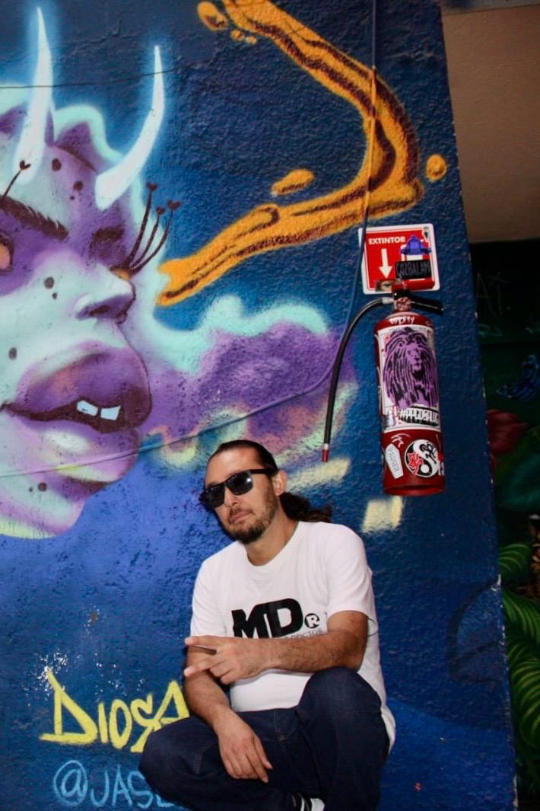
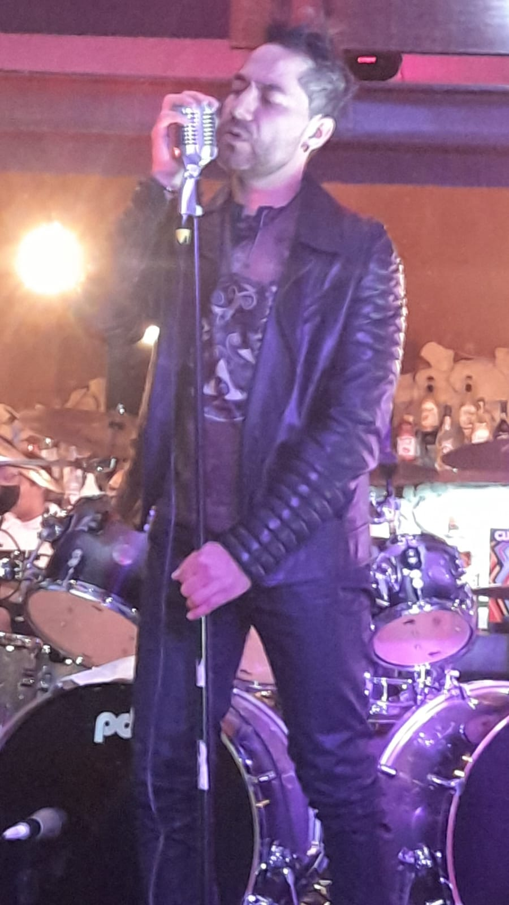
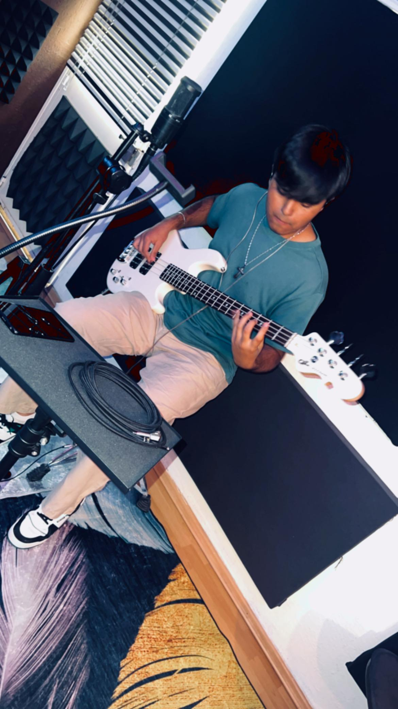
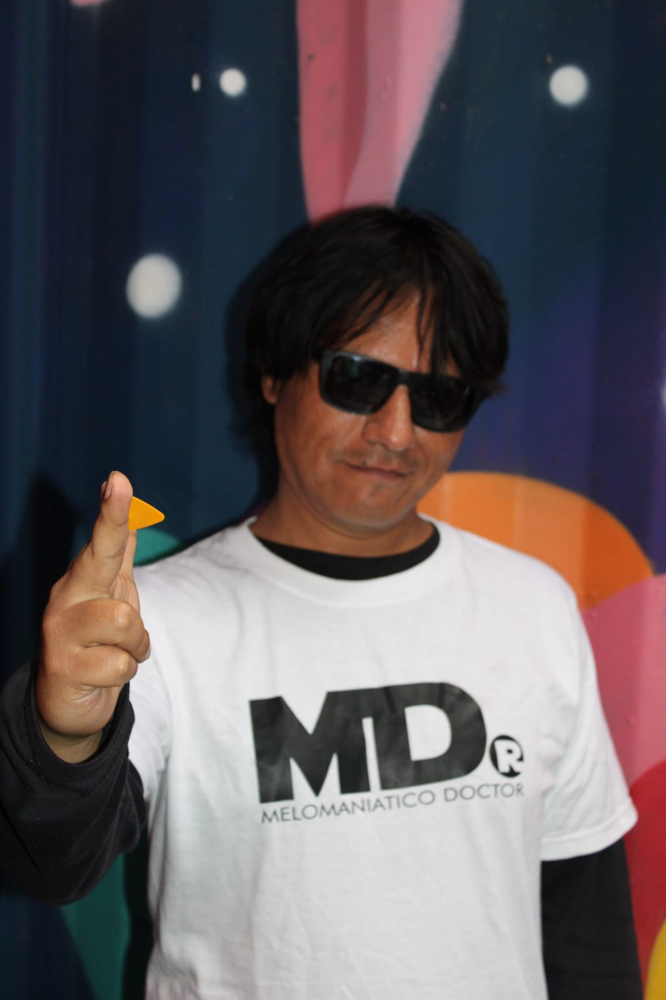
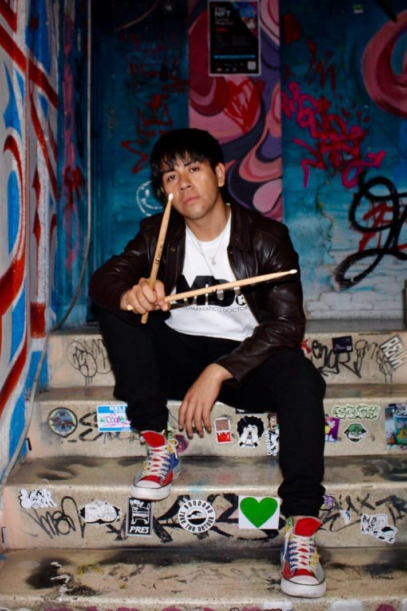

Acerca de nosotros
¡Siempre!… hay un punto de partida, cuando se da el principio del fin. ¡Siempre!... hay un nuevo comienzo, una vida vieja por una nueva, un cambió, una concepción, una conversión. ¡Siempre!... un inicio que comienza con un despertar seguido de una reflexión, que catapulta hacia la acción y como consecuencia a una transformación. Melomaniático Doctor, esa fuerza superior brotó y generó despertares, 5 integrantes para transmitir un mensaje. Dos armonías perféctamente bien equilibradas que junto con una frecuencia baja y una sólida percusión, embellecen al melodista, al encargado de la sucesión que es la herramienta quirúrgica con la que entran a tu corazón y el Melomaniático Doctor te cura y te libera. Junto con sus 5 curanderos formalmente conformados desde diciembre del 2023, los integrantes Víctor, Iván, Fabricio, Jordan y Joshua curan almas, curan mentes y sanan cuerpos, restauran, restablecen, recuperan, levantan y hasta reviven en recuerdos y experiencias las memorias de luchas, amores y pasiones de sus oyentes. Estos brebajes convertidos en un arte sonoro bien definido, son las medicinas que usadas en la fusión de rock latino y otros ritmos, han creado un sonido interesante, especial y profundo.
Melomaniaticos
Ivan Zavala Fragoso

Iván Zavala Fragoso (Zafich)
Lugar de nacimiento: Ciudad de México
Año de inicio musical: Desde los 14 años
Estudios musicales: Escuela de Bellas Artes y Facultad de Música de la UNAM (FaM)
Trayectoria:
Iván Zavala Fragoso (Zafich) es guitarrista, compositor y corista, con más de dos décadas de experiencia en la escena musical. A los 14 años, comenzó su camino en la música tocando la guitarra y rápidamente tuvo la oportunidad de destacar: en noviembre y diciembre de 1995, con su primera banda, abrió los conciertos de Tijuana No y La Cuca, dos pilares del rock mexicano, un logro temprano que marcó el inicio de una carrera sólida.
A lo largo de los años, Iván ha participado en múltiples proyectos musicales, explorando no solo el rock, sino también diversos géneros que reflejan su versatilidad y habilidad técnica. Su formación académica en la Escuela de Bellas Artes y en la Facultad de Música de la UNAM (FaM) le ha permitido consolidar un estilo único que combina precisión técnica, creatividad y un sonido fresco que conecta con cualquier audiencia.
Instrumento principal: Guitarra
Estilo y propuesta:
Iván Zavala Fragoso se caracteriza por su capacidad de adaptación, sensibilidad artística y la calidad de su ejecución, tanto en el estudio como en vivo. Como compositor y guitarrista, su estilo se enriquece con influencias de distintos géneros musicales, creando atmósferas sonoras llenas de fuerza y emoción. Su experiencia como corista complementa su propuesta, añadiendo un elemento armónico que eleva cada proyecto en el que participa.
Victor Javier Melchor

Víctor (Vicco)
Lugar de nacimiento: Ciudad de México
Año de inicio musical: Desde los 15 años
Trayectoria:
Víctor, conocido artísticamente como Vicco, es un vocalista con amplia experiencia y presencia en la escena musical. Desde los 15 años, comenzó a desarrollar su talento, explorando su voz y encontrando en la música el medio perfecto para conectar con las emociones y el público. A lo largo de su carrera, ha sido parte de proyectos destacados como Arkanos, Lyvelula y MD, donde ha consolidado su estilo vocal y su capacidad para liderar escenarios.
Como vocalista, Vicco se distingue por su rango versátil, su fuerza interpretativa y su habilidad para transmitir la esencia de cada canción, llevando a cada presentación una energía única.
Instrumento principal: Voz
Estilo y propuesta:
Vicco combina técnica vocal y pasión, fusionando influencias de distintos géneros para crear interpretaciones potentes y emotivas. Su presencia en el escenario y su carisma lo convierten en un líder natural, capaz de conectar profundamente con su audiencia y enriquecer cada proyecto musical con su talento vocal inconfundible.
Joshua Chaparro Cruz

Joshua Chaparro Cruz (WtfJoshua)
Lugar de nacimiento: Estado de México
Año de inicio musical: 2022
Trayectoria:
Joshua Chaparro Cruz, conocido artísticamente como WtfJoshua, es un talentoso bajista y guitarrista que ha demostrado un rápido crecimiento y pasión por la música desde su inicio en 2022. A pesar de su corta trayectoria, ha sido parte de tres proyectos musicales, donde ha podido consolidar su experiencia en el escenario y en el desarrollo de propuestas sonoras frescas y energéticas.
Su versatilidad en el bajo y la guitarra lo convierten en un músico capaz de adaptarse a diferentes géneros y estilos, aportando siempre una base sólida y melódica que potencia cualquier proyecto.
Instrumentos: Bajo y guitarra
Estilo y propuesta:
WtfJoshua se distingue por su creatividad y su habilidad para construir líneas de bajo dinámicas y precisas, además de desempeñarse con soltura en la guitarra. Su enfoque musical se centra en fusionar energía y técnica, aportando a cada banda una identidad rítmica que conecta con el público y enriquece la experiencia musical en vivo.
Fabricio

Fabricio Kovely
Lugar de nacimiento: Ciudad de México
Año de inicio musical: Mediados de los 2000
Estudios musicales: Facultad de Música de la UNAM (FaM)
Trayectoria:
Fabricio Kovely es un guitarrista y multiinstrumentista con una amplia trayectoria musical que inicia a mediados de los años 2000. Con una sólida formación en la Facultad de Música de la UNAM (FaM), Fabricio ha perfeccionado su técnica en la guitarra, consolidándose como un músico versátil y experimentado.
A lo largo de su carrera, ha explorado diversos géneros musicales y ha colaborado en múltiples proyectos tanto en estudio como en escenarios. En 2024, Fabricio tomó la decisión de iniciar su proyecto solista, un espacio en el que despliega toda su creatividad y experiencia, destacando su habilidad como guitarrista principal y como compositor.
Instrumentos: Guitarra (principal), multiinstrumentista
Estilo y propuesta:
Fabricio Kovely se distingue por su destreza técnica y su capacidad para crear composiciones que equilibran la precisión con la sensibilidad artística. Su estilo combina influencias clásicas y contemporáneas, logrando un sonido característico que conecta con el público. Como guitarrista, su ejecución se destaca por su expresividad y dominio del instrumento, haciendo de cada interpretación una experiencia única.
Jordan Casasola

Jordan Casasola
Lugar de nacimiento: Ciudad de México
Año de inicio musical: 2016
Estudios musicales: Escuela de Bellas Artes Nezahualcóyotl
Trayectoria:
Jordan Casasola es un baterista con una trayectoria sólida desde su inicio en 2016. Su formación en la Escuela de Bellas Artes de Nezahualcóyotl le ha permitido perfeccionar su técnica y desarrollar un estilo único en la ejecución de la batería.
A lo largo de su carrera, Jordan ha participado en diversas agrupaciones como Catovans, Batucada Nahui, Single House y Melomaniático Doctor, proyectos en los que ha aportado su talento rítmico y su habilidad para crear dinámicas que potencian la identidad sonora de cada banda.
Instrumento principal: Batería
Estilo y propuesta:
Jordan Casasola se caracteriza por su precisión, potencia y creatividad al momento de interpretar la batería. Su estilo combina influencias clásicas y contemporáneas, creando ritmos sólidos y enérgicos que aportan una base fundamental en cada presentación. Como baterista, su propuesta destaca por su capacidad de adaptación a distintos géneros musicales, logrando siempre una ejecución impecable que conecta con la audiencia.
Fotografías

Información de Contacto
Nombre del responsable de prensa:VDMV
Teléfono:5573779799
Correo electrónico:melomaniaticodr@gmail.com